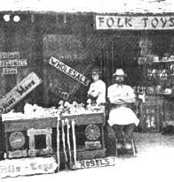

THE Mother Earth News(restricted), P.O. Box 70, Hendersonville, N.C. 28791
If you now operate, or have ever operated, a successful home business that was inspired by an article you read in MOTHER, tell us (in 500 words or less) when and where-and with how much "seed money"-you started your venture. Because if your story can be fitted into an upcoming installment of BOOTSTRAP BUSINESSES, you'll receive [1] the warm satisfaction of knowing that you helped someone else find the happiness you enjoy and [2] a free two-year new or renewal subscription to THE Mother Earth News(restricted).
In January of last year I decided it was time for a change of career . . . since my import/export enterprise was being sorely affected by the rising cost of travel and the increasingly negative attitudes many Third World countries had toward the United States.
I was certain that I could manage to make such a switch, because I'd successfully started a number of occupations over the years . . . but I first had to come up with an idea for a business that would be right for me. Many of my past endeavors had been inspired by MOTHER's success stories, and this time the tale of Brent and Carol Shafer's blacksmithing enterprise (as presented in issue 55, page 125) came to mind.
I'd apprenticed under a silversmith more than 30 years previously, after I'd been discharged from the army following World War II, and it seemed that I finally had the perfect opportunity to make use of that valuable training . .. by setting up a "jack of all repairs" business. I invested a total of $542 in my new vocation: $12 for business cards, $60 a month for advertising in two local newspapers, $170 for tools and equipment, and $300 for insurance. In addition, I continued to purchase (whenever I could afford to) materials that would improve the quality of my work, and I scrounged useful implements wherever possible.
I began by accepting repair jobs on all metal-ware, plus glass, porcelain, ceramics, ivory, amber, tortoise shell, and marble . . . currently I'm in the process of learning about the restoration of paper items as well: books, art prints, documents, and stamps, for example. Though I'm also experienced in repairing jewelry and mending wooden objects, I've found that I don't have time to accept chores that fall into these categories . . . so I refer all such tasks to local jewelers and cabinetmakers, who-in turn-send appropriate jobs to me.
My earnings during the first 12 months of business have averaged $250 per week, and I anticipate a substantial increase in profits once I become established and better known in the community. In fact-from past experience-I think it's safe to expect that, before long, hard work and word-of-mouth advertising will serve to double my present income!
Tom Beveridge
Waimanalo, Hawaii
Every weekend-during the spring, summer, and fall-my wife Nancy and I drive from Long Island to the Catskill Mountains . . . to spend a quiet two days in a trailer that we keep at one of the area's campgrounds. From the beginning, we made it a habit to attend a country auction during each of our visits ... and, thanks to MOTHER's encouraging article "How to Go to Work for Yourself" (which appeared in issue 52, page 36), we eventually got to thinking that we could probably establish a similar enterprise of our own.
We started our venture by purchasing $68 worth of antiques, curios, and other resalable items . . . over the course of several trips to the Catskills. Each time we returned to Long Island, Nancy and I made minor repairs on our storehouse of goods (using the miscellaneous hardware we'd accumulated over the course of many years of scrounging) . . . and-once we'd gathered a sizable supply of products-we invested $32, to gain entrance to a number of flea markets and to advertise our own garage sales.
My wife and I had confidence that we could make a success of our business, but we never dreamed that our original $100 would be returned to us sevenfold! The profits that Nancy and I have since made in our venture not only pay for our holidays in the Catskills, but have also provided us with a tidy nest egg . . . for whatever the future may hold.
Bill & Nancy Youngfert
Franklin Square, N.Y.
When my family and I discovered the article "A 19th Century Business You Can Start Today" (MOTHER NO. 32, page 72), we immediately wanted to start a tintype photography enterprise. It wasn't easy, however, to resign from my secure position as vice president of a company, sell our home in the suburbs, and move away from the big city. Friends and relatives constantly reminded us that we were "crazy to give up so much". But-after a year of plotting, planning, and defending ourselves-we made the break from our former lifestyle and settled in a small Texas town.
We'd been informed that our new locale had a fairly heavy summer tourist trade, so-with a $1,000 nest egg and less than a basic knowledge of photography-we set up shop and opened the "Smiling Eyes Photo Gallery" in May 1976. Our "seed money" bought us a used 4 X 5 camera and wooden tripod, film, chemicals and other darkroom equipment, and a supply of fabrics that we used to make nineteenth-century costumes in which our customers could pose.
That first summer we made back our original capital plus a healthy profit to boot . . . and our enterprise has had a steady 30% increase each year since then (the business is projected to earn in excess of $60,000 during the next 12 months). In fact, we became so encouraged by the good fortune of the tintype studio that we expanded into another line of business: making wooden toys and trinkets. Our new shop-the "Village Woodsmith"-has also become quite popular, but it may well be that two stores at once are more than our household cares to handle.
In any event, we city folk are pleased to have accomplished exactly what we set out to do: We've proved to ourselves that we have the wherewithal to build up a successful business away from the urban rat race.
Mike Mosel
San Marcos, Tex.
I found myself suddenly unable to hold down a regular job, at age 33 . . . as a result of a nerve injury to my back. But-like most people-I wanted to lead a productive life . . . so I turned to MOTHER's back issues for help. I needed an occupation that would allow me to set my own pace and hours, and I happened upon just what I was looking for on page 94 of MOTHER N0. 46.
The article "We Make Cash in the Country Selling Used Tools" inspired me to check out the local newspaper's list of auctions and garage sales that very same night. And, within just a few short weeks, I'd accumulated a nice selection of tools. It was necessary, of course, to repair a large portion of my inventory, so I began replacing broken parts . . . combining the best of the assorted heads and handles to produce a variety of good-as-new implements (a little sandpaper, lacquer, and spray paint went a long way toward making my renovations "presentable").
My initial investment in tools and revamping supplies came to just $25, and my first one-day sales trip to the flea market brought in a total profit of $75. Then-gradually-I began to add pots, pans, and even silverware to my recycled stock: My best buy was a pair of six-piece fork sets that I was able to pick up for only $2.50. The tableware turned out to be solid silver . . . and was appraised by a jeweler for more than $500!
I may never come across a deal quite like that one again . . . but I'm content buying, fixing, and reselling my vast assortment of everyday items: What began as a pleasurable pastime has developed into a very valuable vocation.
Gary E. Byrd
Battle Creek, Mich.
I practically grew up pickin' on a guitar, and I've always found it easy to make a little pocket money by playing a gig here and there. When I moved out to the boondocks, however, I was discouraged to find that the opportunities for such employment were few and far between . . . until l came across an alternative musical enterprise.
MOTHER NO. 11 (page 42) featured an article called "How to Teach a Guitar Workshop" that showed me the way to put my musical skills to work. I started by convincing the owner of a TV repair shop to let me hold classes in his place of business . . . in exchange for $1.00 out of every $4.00 half-hour individual lesson I taught. Then I put a small advertisement in the newspaper, and-before long-the calls began coming in. The initial ad attracted 30 registrants, plus a local pastor's offer to allow me to use his church for my music instruction at the same cost I'd negotiated with my first "landlord".
As I became established in my new undertaking, I learned to request that students pay for four lessons at a time, to insure consistent attendance . . . and to ask that cancellations be made at least 24 hours in advance. Experience also helped me to determine some of my own teaching preferences . . . such as that I'm more comfortable teaching individual-rather than group-lessons, and that I prefer meeting my students at a central location instead of making "house calls". The latter decision meant, of course, that I had to continue to pay for school space . . . but that turned out to be my only expense, and the money came out of each pupil's tuition.
The bottom line is that I earn $3.00 per session or $6.00 an hour . . . so that even when my students schedule only one lesson each in a seven. day period, I take home a $90 salary for a 15 hour work week. And that's quite a bit more than the "spending money" I'd originally hoped for!
J.A. Verner
Prattsburg, N.Y.
|
 |
|
|